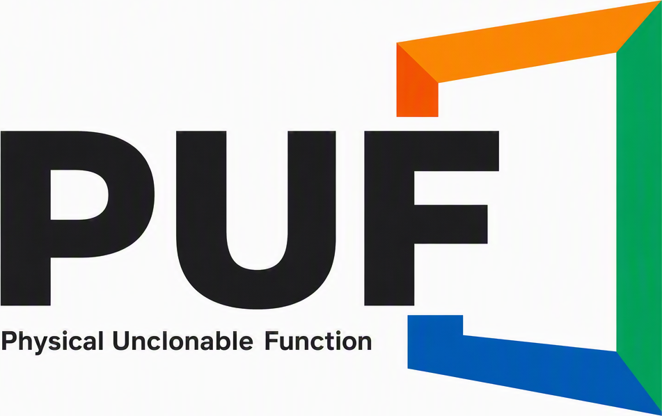

알약 표면의 식별 문자만으로 성분, 효능,
주의사항까지 한 번에 확인하세요.
하루 최대 4,000mg을 초과하지 마세요. 음주 후 복용은 간 손상 위험을 높일 수 있어요.
의약품 식별 정보는 식약처 공개 데이터를 매일 갱신해 제공해요.
가입 없이 카메라만 켜면 시작할 수 있어요.
알약 표면의 식별 문자만으로 성분, 효능, 주의사항까지 한 번에 확인하세요.
하루 최대 4,000mg을 초과하지 마세요. 음주 후 복용은 간 손상 위험을 높일 수 있어요. 다른 아세트아미노펜 함유 감기약과 함께 복용하지 마세요.
의약품 식별 정보는 식약처 공개 데이터를 매일 갱신해 제공하며, 촬영한 사진은 서버에 저장하지 않아요.
가입 없이 카메라만 켜면 시작할 수 있어요.